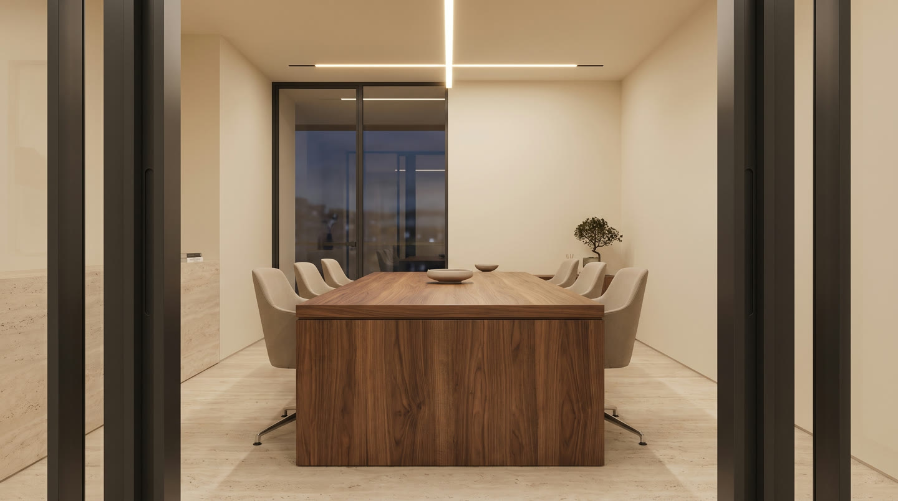
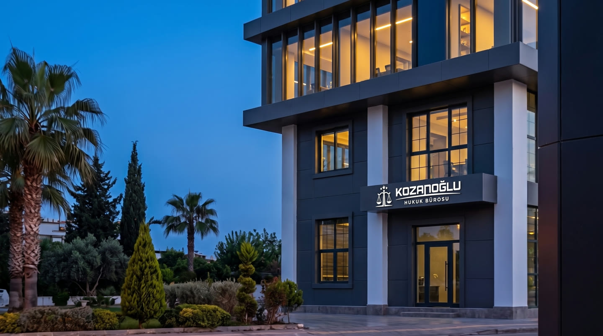

Bütüncül bakış
Olayı, belgeleri ve olası sonuçları birbirinden koparmadan değerlendiririz.
Hakkımızda
Kozanoğlu Hukuk Bürosu, her meseleyi kendi koşulları içinde değerlendirir. Dinler, ayırır, netleştirir ve izlenebilecek yolu açık biçimde ortaya koyar.
Yaklaşımımız
Belgeler önemlidir. Fakat doğru değerlendirme, olayın geçmişini, tarafların konumunu ve sizin önceliklerinizi birlikte okumayı gerektirir.

Açık bir çerçeve, doğru kararın zeminidir.
İlk görüşmede konuyu dağıtmadan dinler, kritik ayrıntıları ayırır ve hukuki çerçeveyi kurarız. Hangi noktaların açıklığa kavuşması gerektiğini birlikte belirleriz.
Süreç başladığında nerede olduğunuzu, hangi adımın neden atıldığını ve sırada ne bulunduğunu bilirsiniz. İletişimi bu açıklık üzerine kurarız.
Çalışma İlkeleri
Çalışma biçimimizi üç ilke belirler.
Olayı, belgeleri ve olası sonuçları birbirinden koparmadan değerlendiririz.
Hukuki kavramları sadeleştirir, seçenekleri ve sonuçlarını açıkça konuşuruz.
Dosyanın her aşamasını planlar, gelişmeleri zamanında ve düzenli biçimde izleriz.
Avukatlarımız
Kozanoğlu Hukuk Bürosu ekibi, her dosyayı dikkatli değerlendirme ve açık iletişim ilkeleriyle ele alır.
Avukat
Avukat
Avukat
Stajyer Avukat
İlk Görüşme
Meselenizi, önceliklerinizi ve elinizdeki bilgileri birlikte değerlendiririz.
İzlenebilecek yolları, dikkat edilmesi gereken noktaları ve olası aşamaları konuşuruz.
Uygun görülen yaklaşım doğrultusunda açık bir çalışma planı oluştururuz.
Konum
Görüşme öncesinde bizimle iletişime geçerek uygun zamanı belirleyebilirsiniz.

Kozanoğlu Hukuk Bürosu